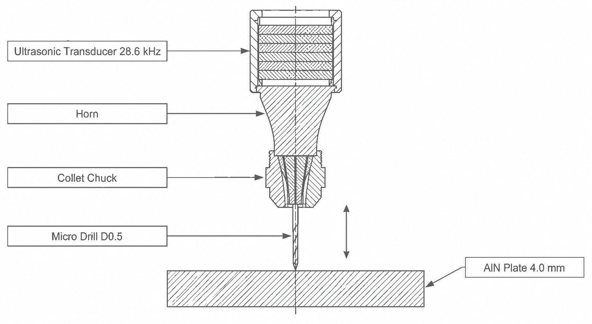

孔徑本身幾乎沒動，動的是散布。孔 91–130 的孔徑中位是 498.00 µm，孔 261–300 是 500.45 µm——走了 2.45 µm。但同一段的段內標準差從 0.543 µm 放大到 1.163 µm，2.14 倍。
電性訊號跟得上這件事。孔徑與阻抗實部差 ΔR 的相關是 +0.354（p=1.1×10⁻⁶），比與功率差 ΔP 的 +0.309 高。ΔR 是比較好的那個通道。
這份文件不主張可以拿來換刀。它主張的是：驅動器既有的電性記錄，與離線量測的孔品質，在磨耗這件事上指向同一個方向。要變成換刀依據還缺什麼，寫在最後一節。
量測配置：訊號是從驅動器來的，不是從主軸來的
這一點決定了整套方法能不能成立。監測量是超音波換能器的驅動電性——刀尖機械阻抗的代理量，不是主軸馬達電流。刀具是 D0.5 微鑽頭，工件是 4.0 mm 厚的氮化鋁板，超音波頻率 28.6 kHz，走 G83 全退啄鑽。

image_gen），經三輪迭代收斂，並由第三方視覺讀者分格放大盲讀驗收。已知未修缺陷：相鄰件剖面線方向未依 ISO 128 交替（要求三輪、三輪未修，判定為執行者能力邊界）。逐項驗收紀錄見 assets/setup.prov.md。
Source：結構規格 usm-drill-setup（節點 5／邊 4／不變量 1）；`codex-cli 0.144.6` ／ `gpt-5.6-sol`。機制：閉環鎖幅值，所以負載跑到直流端去了
驅動器是定振幅閉環。刀尖負載變大時，它會把電流拉住不讓振幅掉——所以電流本身對負載不敏感：全段 ΔI 是 9.62 ± 0.41 mA，213 個孔幾乎是一條直線。
負載資訊跑去哪了？跑到相位裡，由 Buck 直流端的實功攜帶。這條鏈是整份文件的地基：
三個通道各自量到什麼
ΔI
切削相與空載相的電流差
全段 9.62 ± 0.41 mA
不敏感——閉環鎖幅值的直接後果
ΔP
切削相與空載相的 Buck 直流端實功差
逐孔取中位數聚合
敏感但吵——單取樣突波會拉爆均值
ΔR
P_buck / I²＝阻抗實部 Re(Z) 差
與 ΔP 同源（r=0.905）
訊噪比較佳——與孔徑的相關也較高
四段趨勢：兩段上升、一段下降、一段不顯著
| 孔段 | n | ΔP 斜率／孔 | ΔP p 值 | ΔR p 值 | 讀法 |
|---|---|---|---|---|---|
| 91–120 | 30 | −4.44 | 0.0164 | 0.167 | 下降段。成因未定，見待驗證點 |
| 121–180 | 60 | +2.11 | 0.0030 | 0.0003 | 負載累積。ΔR 比 ΔP 更顯著 |
| 181–210 | 30 | −3.07 | 0.376 | 0.475 | 不顯著。此段走 HMI 鏈，絕對值不可跨鏈比較 |
| 211–300 | 90 | +1.58 | 0.0357 | 0.0243 | 負載仍在累積，300 孔未見平台 |
要注意 181–210 那一列：它不是「刀變好了」。那一段的資料來自另一條記錄鏈（HMI 匯出，0.59 s 不規則取樣），跨鏈的絕對值不能直接比。它在表上唯一能讀的是「檔內趨勢不顯著」。
磨耗長什麼樣：中位數幾乎不動，雲團變胖
下面這張圖會隨你往下捲逐孔展開。盯著灰色帶的寬度，不要盯著中線。

電性與實體對得起來，而 ΔR 是比較好的那個通道
| 相關 | r | p | n |
|---|---|---|---|
| 孔徑 × ΔR | +0.354 | 1.1×10⁻⁶ | 180 |
| 孔徑 × ΔP | +0.309 | 2.5×10⁻⁵ | 180 |
兩個都顯著，而 ΔR 較高。這與 ΔR 在 121–180 段的 p 值（0.0003 對 ΔP 的 0.0030）方向一致。兩條獨立的線指向同一個結論：要選一個通道，選 ΔR。
但這個 r 只有 0.35。它說的是「有關係」，不是「可以用來預測」。0.354²≈0.125——孔徑變異只有約 12.5% 被 ΔR 解釋掉。
這份文件的三個邊
關鍵前提
- 追頻參數已鎖共振帶（TrackRange 1000→100）。沒有這一步，電性與負載之間看不到關係。
- 逐孔 ΔP 一律中位數聚合——單取樣突波會拉爆均值（實例：孔 109 一啄 buckP_cut 到 95,631）。
- 切削相＝IFB 低相。定振幅閉環下負載讓電流下降，方向不能搞反。
邊界條件
- 跨儀測鏈的絕對值不可比。181–210 走 HMI 鏈，只能讀檔內趨勢。
- 孔品質是 NEXIV 離線量測，不是線上訊號。這個閉環是事後對刀，不是即時監測。
- 孔 88–90 只錄到 5.7 分鐘（56 啄／3 孔，其他段約 31 啄／孔），該三孔指標信心低。
- 全部讀數來自一支刀、一種材料、一台機。
待驗證點
- 91–120 的下降段成因未定。暖機？重夾？參數？「隔夜重啟暫態」假說已被 210→211 同等 17 h 停機無回落排除（p=0.80）。
- 散布放大是磨耗後段不穩定還是製程變異，本輪分不出來。
- ΔR 的 r=0.35 撐不起換刀判準。要當判準需要多支刀複現。